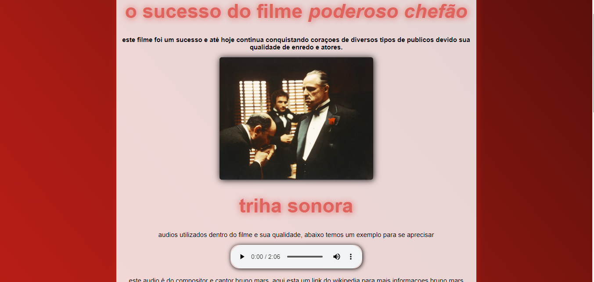
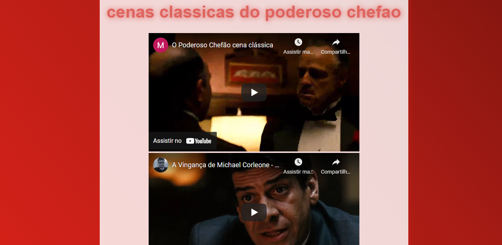
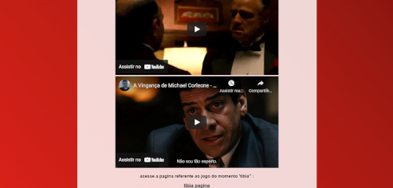
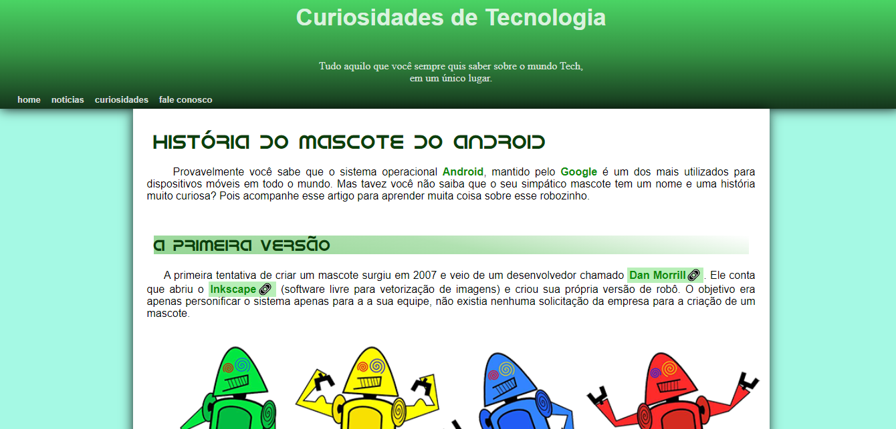
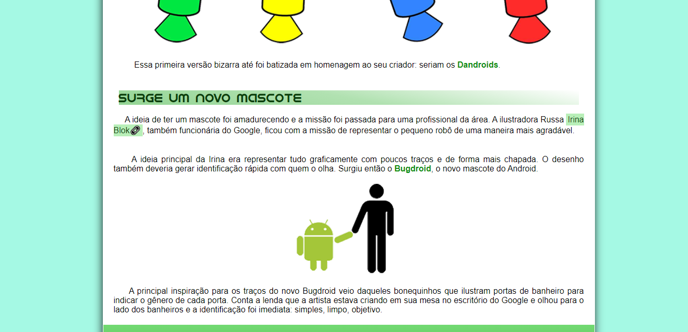
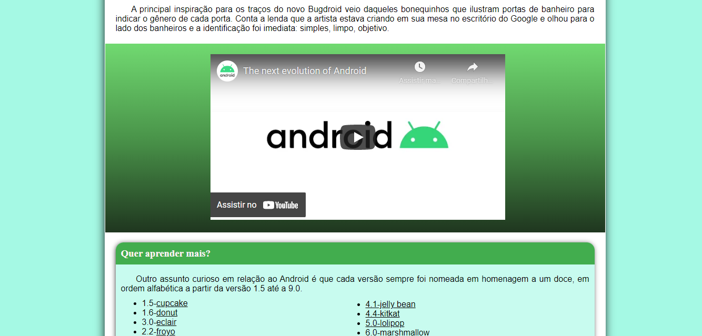
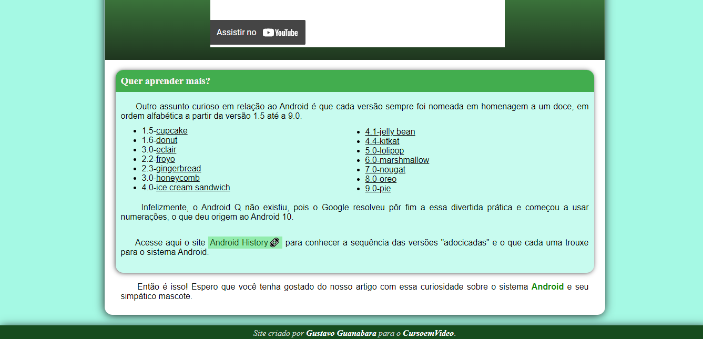

Thiago Jesus Machado
Estou cursando análise e desenvolvimento de sistemas e atualmente estou no término do terceiro semestre, com previsão de término em SET/2023, abaixo mais informações sobre os meus conhecimentos.
Projeto Poderoso Chefão/Tibia
Este meu primeiro projeto fiz apenas com o que aprendi no meu curso e criei um blog com duas páginas referente ao filme poderoso chefão e o jogo de computador tíbia. Neste projeto estipulei uma paleta de cores como cor primária o vermelho, incorporei vídeos diretamente do YouTube ( fazendo assim deixamos o site mais leve e mais barato no momento da hospedagem) adicionei um dos principais áudios da trilha sonora do filme com interação para ouvir, criei uma lista com nomes linkados, ao clicar nos nomes o usuário era redirecionado ao Wikipédia referente a bibliografia do ator. Deixei todas as Box’s do site com sombreamento bem leve somente para dar efeito “ papel sobre a mesa “. Ao final da primeira página possui um texto “ tibia página “ onde ao clicar o usuário é redirecionado para a segunda página do site, onde além do conteúdo já mencionado anteriormente possui dois links para downloads dos arquivos do jogo tíbia, o primeiro link é do arquivo diretamente do site, é o segundo link é para download diretamente do site oficial do tibia.
  .png)
Projeto Android
Este segundo projeto fiz no meu curso que fiz com o professor Gustavo Guanabara do curso html e css, este segundo projeto eu fiz totalmente sozinho somente me baseando no layout que o professor mostrou durante a aula, nele utilizei algumas funções como a pseudo classe (hover), adicionei uma fonte externa, separei de forma ainda mais organizada e apresentável cada sessão do artigo e com toda estrutura semântica do html com seus respectivos conteúdos como pode ver nas fotos.
   Metas
Minhas metas são agora me tornar um desenvolvedor front-end completo. Já iniciei meu curso de Java e em seguida aprenderei suas respectivas frameworks, tenho como objetivo estudar e aprender angular também. Estou a procura de um estágio para aprimorar meu conhecimento e aplicar conteúdo que aprendi
.